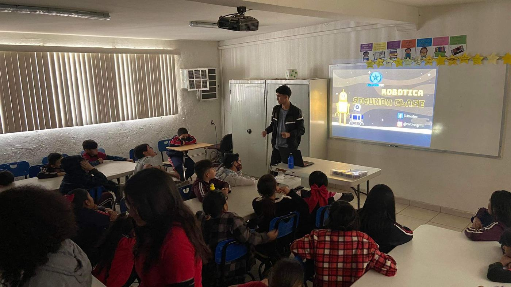

Si el 2023 y 2024 fueron los años en que la Inteligencia Artificial (IA) generativa aterrizó de golpe en las aulas, y el 2025 fue el año de aprender a convivir con ella, el bienio 2026-2027 se perfila como la era de la integración física y ética. Ya no nos sorprende que una máquina hable; ahora queremos que actúe en el mundo real de forma colaborativa y sostenible.
1. Robótica colaborativa (Cobots) en el aula escolar
Hasta hace poco, la robótica escolar trataba de construir un robot aislado que hacía una tarea específica (como seguir una línea). En 2026, la tendencia se inclina hacia los enjambres y la colaboración. Los alumnos ya no programan un solo robot, sino que coordinan tres o cuatro unidades para lograr un objetivo común.
La verdadera magia ocurre cuando el robot de un equipo tiene que comunicarse con el robot de otro equipo para resolver el desafío. Ahí es donde nacen las habilidades de negociación.
2. Sostenibilidad: Hardware reciclable y de código abierto
La presión por reducir la basura electrónica (e-waste) está transformando los kits. Las escuelas en 2027 no querrán kits cerrados de plástico que queden obsoletos en dos años. Veremos un auge monumental en:
- Impresión 3D con filamentos biodegradables (PLA mejorado) para imprimir repuestos.
- Tarjetas controladoras con ciclos de vida más largos, tipo ESP32, que integran WiFi y Bluetooth nativos y soportan actualizaciones OTA (Over The Air).
- Proyectos enfocados en ecología: invernaderos automatizados, medidores de calidad del aire y botes de basura inteligentes.
3. IA Integrada en el Hardware (Edge AI)
La IA dejará de vivir solo en la nube para saltar directamente al microcontrolador. Los estudiantes de secundaria en 2027 estarán entrenando modelos ligeros (TinyML) para que su robot reconozca comandos de voz o clasifique imágenes sin necesidad de estar conectado a internet.
Ya no programaremos sentencias condicionales simples como Si detectas luz, avanza, sino cosas como Si la cámara reconoce una manzana, enciende el LED rojo. Esto cambia por completo las reglas del juego en las competencias y exposiciones escolares.
4. Entornos Híbridos: Del Metaverso al Salón de Clases
Los simuladores seguirán evolucionando. Los "gemelos digitales" (Digital Twins) permitirán a los alumnos programar un robot virtual en un entorno 3D hiperrealista, detectar colisiones, corregir el código y luego mandar ese mismo código exacto al robot físico en su escritorio.
El impacto presupuestal: Esto es una excelente noticia para las escuelas con presupuesto limitado, ya que pueden tener a 30 alumnos programando en simuladores y probando por turnos en 5 robots físicos, sin mermar el aprendizaje.
¿Cómo preparar a tu escuela?
No necesitas tirar tus kits actuales a la basura. La transición es progresiva:
- Empieza con simuladores robustos que permitan a los alumnos equivocarse sin romper hardware.
- Fomenta proyectos transversales: que la clase de robótica se una con la de biología para armar un terrario inteligente.
- Adopta la IA con criterio: usa herramientas que guíen al alumno a descubrir el código, no que se lo escriban.
El futuro no es de los colegios que más gastan en robots brillantes, sino de los que mejor enseñan a los niños a pensar de forma estructurada. En Cultivatec ya estamos listos para 2027, ¿y tú?